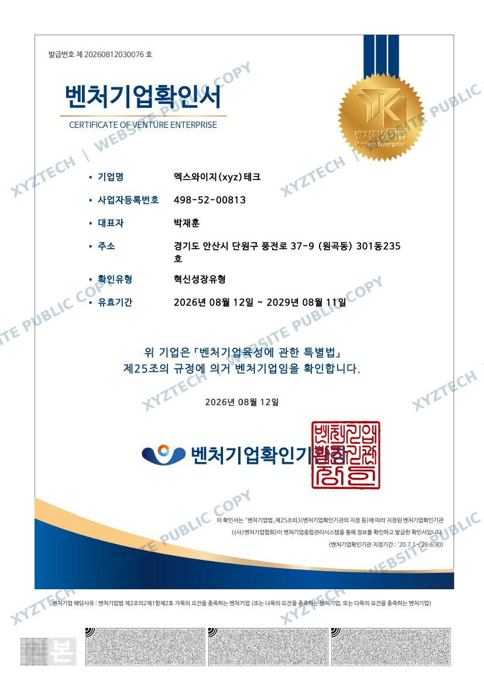

COMPANY
생산공정을 이해하는 설계, 제작과 현장 적용을 고려하는 엔지니어링. XYZTECH가 지향하는 설계의 기준입니다.
Company Overview
설계는 형상을 만드는 일이 아니라, 공정의 조건을 해결하는 일입니다.
XYZTECH는 기계설계, 자동화 용접설비, 공장자동화, 산업용 로봇 시스템 및 차체 용접지그를 설계하는 산업기술 엔지니어링 기업입니다.
고객의 생산환경과 요구조건을 정확히 파악하고 제작성, 조립성, 작동성과 유지보수를 고려하여 실제 적용 가능한 설계 데이터를 제공하는 것을 목표로 합니다.
PRECISION기준과 조건을 반영한 정밀 설계
INTEGRATION기구와 공정을 연결하는 설계
RELIABILITY검토와 변경이 추적되는 업무
Organization전문 기능이 연결되는
전문 기능이 연결되는
설계 업무 체계
조직 규모를 과장하지 않고, 프로젝트 수행에 필요한 업무 기능과 협업 체계를 중심으로 구성했습니다.
CEO대표이사
MANAGEMENT경영관리
- 경영·행정 관리
- 고객 문의 및 계약 대응
- 문서 및 대외업무 관리
ENGINEERING설계사업부
- 기계설계
- 차체 용접지그 설계
- 제작도면 작성
AUTOMATION DESIGN자동화설계사업부
- 용접자동화설비 설계
- 공장자동화설비 설계
- 산업용 로봇 시스템 설계
PROJECT & QUALITY프로젝트·설계품질
- 요구사항 및 공정 검토
- 간섭·조립성·설계 검토
- 일정 및 설계 데이터 관리
R&D DEPARTMENT연구개발전담부서
- 자동화설비 설계기술 연구
- 지그·기구 설계기술 개발
- 설계 표준화 및 업무개선
프로젝트의 특성과 범위에 따라 각 설계 기능이 유기적으로 협업합니다.
Certifications & Recognitions공인된 기업 기반으로
공인된 기업 기반으로
기술을 발전시킵니다.
확인서 원문에는 홈페이지 공개용 XYZTECH 워터마크를 적용했습니다. 각 문서를 선택하면 전체 내용을 확인할 수 있습니다.

History설계 전문성에서
설계 전문성에서
기술기업으로
2024
XYZTECH 사업 개시
산업자동화 및 기계설계 전문업무 시작
2026
기술기업 기반 강화
뿌리기업 확인 · 연구개발전담부서 인정 · 벤처기업 확인
XYZTECH의 설계역량이
필요한 프로젝트가 있습니까?
요구사항과 일정을 알려주시면 설계 가능 범위를 검토하겠습니다.